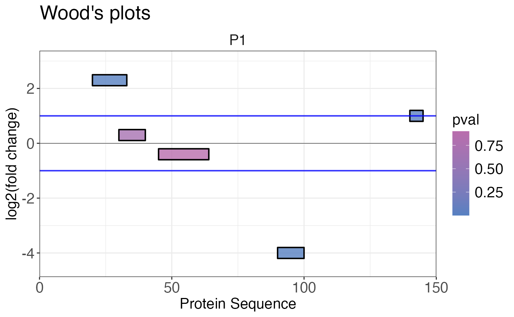

Creates a Woods' plot that plots log2 fold change of peptides or precursors along the protein sequence. The peptides or precursors are located on the x-axis based on their start and end positions. The position on the y-axis displays the fold change. The vertical size (y-axis) of the box representing the peptides or precursors do not have any meaning.
woods_plot(
data,
fold_change,
start_position,
end_position,
protein_length,
coverage = NULL,
protein_id,
targets = "all",
facet = TRUE,
colouring = NULL,
fold_change_cutoff = 1,
highlight = NULL,
export = FALSE,
export_name = "woods_plots"
)a data frame that contains differential abundance, start and end peptide or precursor positions, protein length and optionally a variable based on which peptides or precursors should be coloured.
a numeric column in the data data frame that contains log2 fold
changes.
a numeric column in the data data frame that contains the start
positions for each peptide or precursor.
a numeric column in the data data frame that contains the end
positions for each peptide or precursor.
a numeric column in the data data frame that contains the length
of the protein.
optional, a numeric column in the data data frame that contains coverage
in percent. Will appear in the title of the Woods' plot if provided.
a character column in the data data frame that contains protein
identifiers.
a character vector that specifies the identifiers of the proteins (depending on
protein_id) that should be plotted. This can also be "all" if plots for all
proteins should be created. Default is "all".
a logical value that indicates if plots should be summarised into facets of 20
plots. This is recommended for many plots. Default is facet = TRUE.
optional, a character or numeric (discrete or continous) column in the data frame containing information by which peptide or precursors should be coloured.
optional, a numeric value that specifies the log2 fold change cutoff used in the plot. The default value is 2.
optional, a logical column that specifies whether specific peptides or precursors should be highlighted with an asterisk.
a logical value that indicates if plots should be exported as PDF. The output
directory will be the current working directory. The name of the file can be chosen using the
export_name argument. Default is export = FALSE.
a character vector that provides the name of the exported file if
export = TRUE. Default is export_name = "woods_plots"
A list containing Woods' plots is returned. Plotting peptide or precursor log2 fold changes along the protein sequence.
# Create example data
data <- data.frame(
fold_change = c(2.3, 0.3, -0.4, -4, 1),
pval = c(0.001, 0.7, 0.9, 0.003, 0.03),
start = c(20, 30, 45, 90, 140),
end = c(33, 40, 64, 100, 145),
protein_length = c(rep(150, 5)),
protein_id = c(rep("P1", 5))
)
# Plot Woods' plot
woods_plot(
data = data,
fold_change = fold_change,
start_position = start,
end_position = end,
protein_length = protein_length,
protein_id = protein_id,
colouring = pval
)
#> $`1`

#>